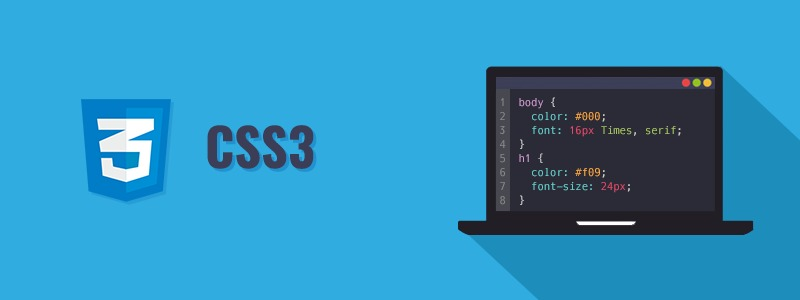
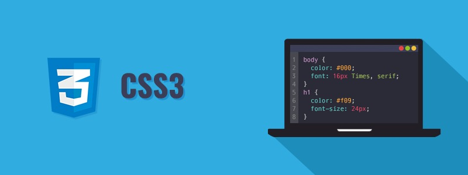

o que é html e css?
HTML (HiperText Markup Language) é o código utilizado para fazer um website. CSS (Cascading Style Sheets) por sua vez, é o código utilizado para deixar o seu website bonito. É um código de estilização. ... Linguagens que devem ser dominadas pelos desenvolvedores de websites hoje em dia.

O que é html e Para que Serve?
HTML é a sigla para Hyper Text Markup Language, ou seja, linguagem de marcação de hipertexto. Ela é utilizada como marcação para desenvolver páginas e documentos eletrônicos para a internet. Isso significa que ela garante a formatação ideal para sites. Porém, não pense que existe apenas esta linguagem de programação. Há muitas outras, mas a HTML marca em hipertexto, criando uma estrutura básica. A CSS, por exemplo, é a responsável por formar o estilo das páginas, como formatações de cores e formas.
Como funciona a estrutura?
A estrutura de um código feito em HTML é repleta de tags. Podemos pegar como exemplo o conteúdo de uma página. Entenda: o título principal é marcado como < h1> — o “H” representa “head”, ou seja, a cabeça, o topo do texto. Depois dele, vem os demais: < h2>, < h3> e assim por diante. Isso não significa necessariamente o tamanho da fonte no visual da página, mas, sim, a forma como os robôs de indexação os lerão. Por isso, o HTML é conhecido como uma linguagem de marcação, porque prioriza a hierarquia das informações e não o estilo — que pode ser modificado no CSS. Para ficar mais claro ainda, saiba que se optar por colocar um dado específico em < h1>, os buscadores farão a leitura dele como muito relevante.

Quais são as tags básicas de HTML

ﾠﾠ

o que é CSS? Entenda Como Funciona e Para que Serve
Se você já ouviu falar sobre programação, deve imaginar aquela tela com várias letras e números que formam códigos. Para facilitar sua compreensão, vamos apresentar o que é CSS, bem como seu funcionamento e até mesmo de que maneiras pode facilitar o seu dia a dia de trabalho. Não precisa ter receio se não é um programador ou se não conta com habilidades técnicas básicas. Vamos ajudar você a ter um entendimento geral sobre o assunto e a lidar com soluções mais práticas para otimizar suas páginas da web. Confira!
Entenda o que é CSS
CSS é a sigla para Cascading Style Sheets, ou seja, Folhas de Estilo em Cascatas. É uma maneira de dar estilo ao código criado por linguagens como HTML, XML ou XHTML, por exemplo. De forma prática, ela funciona como uma camada de personalização ao conteúdo visível. Estes tipos de linguagem citados foram idealizados para serem funcionais e, por serem de marcação, precisaram ser aperfeiçoados. O CSS, no caso, veio como uma boa solução para aprimorar a estética dos sites. Por meio dele, é possível separar formatos de conteúdos, bem como definir como serão exibidos em cada página.
Como funciona?
O CSS é um código em que você pode fazer alterações rápidas de layout, como definição de cores e fontes, por exemplo. Essa camada proporciona não apenas a facilidade de personalização, como também ajuda a diminuir a repetição de conteúdo na estrutura do código. Afinal, se esse tipo de configuração pode ser feita na folha de estilo, não precisaria se repetir diversas vezes na própria linguagem.